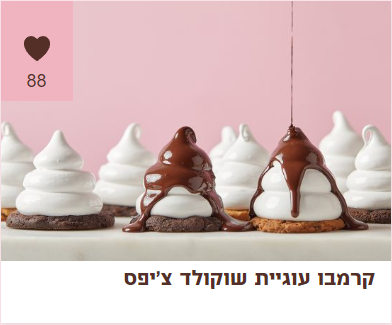

מצרכים:
- 15 עוגיות שוקולד צ'יפס THINS
- 4 חלבונים L
- 1 כוס (200 גרם) סוכר לבן
- 150 גרם שוקולד מריר פרה
- 2-3 כפות שמן
אופן ההכנה:
- מניחים חלבונים וסוכר בקערת מיקסר ומערבבים מעט.
- בסיר בינוני מחממים 2 כוסות מים עד לסף רתיחה.
- מניחים את הקערה על הסיר ומבשלים את החלבונים עם הסוכר תוך כדי טריפה מתמדת עד שהסוכר נמס.
- מוציאים את הקערה, מעבירים אותה למיקסר ומקציפים במשך 10 דקות או עד שנוצרת קציפה לבנה, חלקה ומבריקה.
- מניחים את העוגיות על תבנית שיכולה להכנס למקרר או למקפיא ומזלפים מעל כל עוגייה מהמרנג.
- מעבירים להקפאה של שעה.
- בינתיים ממיסים שוקולד ושמן עד ליצירת רוטב שוקולד חלק.
- טובלים את המרנג של הקרמבו ברוטב ונפטרים מעודפי שוקולד.
- שומרים במקרר עד 4 ימים או במקפיא עד שבועיים.